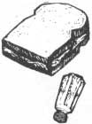
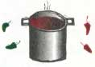
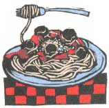

How a family of seven eats for less than $50 a week.
After the addition of four foster sons to their household, Mary Jane and Jeff Cardarelle-Hermans decided it was time to start monitoring their spending. They gradually developed money-saving strategies and transformed their shopping routine. In their self-published book, Eating Economically is Just Plain Smart: How We Feed Our Family of 7 For Less Than $50 Per Week, the Cardarelle-Hermans share with us their secrets for saving.
Instead of buying an expensive box of fruit roll-ups, they'd rather just buy the fruit.
In 1993, Mary Jane and Jeff adopted their five foster children. Two of the boys had been with them as foster children since 1989, the other two since 1990, and their daughter since 1993. The children range in age from eight to seventeen, and are all biological siblings. As not only a large family but also a bi-racial one, the Cardarelle-Hermans are a visible bunch. Mary Jane explains that people were always striking up conversations with her and asking how she does it. "It must be so expensive to feed your family!" But she is actually spending less on groceries than many families of four. After enough interactions of this sort, Mary Jane and Jeff decided they would compile a book filled with money-saving tips and strategies, a list of all the food they keep in their kitchen, and the recipes they use in their own home. It took about one and a half to two years to write the book in their spare time.
Reducing the grocery hills so drastically may seem like a difficult sacrifice to make, but "it was a gradual thing," Jeff explains. After having comparison shopped in and around their hometown in the Milwaukee suburbs, Mary Jane says, "We have it down." She shops at three different stores and spends less than two hours per week buying both food and non-grocery items. She visits a discount supermarket chain once a week, a regular grocery store every two weeks, and a health food store once a month.
One of the main ways the Cardarelle-Hermans are able to cut back is by cutting out convenience foods, which are more expensive and often contain additives and preservatives that can be avoided when cooking from scratch. Mary Jane says, "People think that cooking from scratch takes hours, but it doesn't. It could, but I'm not making big gourmet meals. My casserole takes ten minutes to whip together, and then one-and-a-half hours in the oven."
1 Cook from scratch. It is almost always less expensive than buying pre-packaged food items, and it doesn't mean you will be spending all your time in the kitchen.
2 Create your own low-cost meals. Learn to cook, and find recipes that call for inexpensive ingredients.
3 Stop believing that coupons save you a great deal of money. Coupons can fool you into thinking you're saving money, but they're usually for overpriced pre-packaged foods.
Comparison shop so that you know which stores provide the best buys. No one store will always be the best place to shop. By comparison shopping, you will have greater buying power.
5 Cut back on the number of sweets you feed your family. Sugar has no nutrients, just calories. When you eat foods higher in sugar, you probably overeat to consume the nutrients you need.
Their book offers what they have learned from their experience. For example, "a ten-pound bag of potatoes was a better buy than frozen french fries or hash browns." They also found that a larger container of oatmeal makes more for less than a box of individually packaged instant oatmeal. They often buy in bulk when it's cheaper and look at the unit price to get more for their money. In terms of artificial junk foods, they would rather have the real thing. Instead of buying a box of expensive fruit roll-ups, they'd rather just buy the fruit.
Although they certainly have their system down, Mary Jane tells us they do stray from the list sometimes, but not often. On a child's birthday, for example, they might buy some ice cream. On the whole, the Cardarelle-Hermans stay away from desserts and chips and would rather opt for low-fat food, packed with nutrition. They eat lots of fresh fruit and depend on the seasons for variety. The children do have an allowance that they are allowed to spend on candy, but she says they rarely do.
Mary Jane and Jeff Cardarelle-Hermans have dropped their grocery bills for seven people to $50 per week. Of their new book, Mary Jane says, "We're here to help the people who aren't comfortable with how much they spend." Although they can afford to spend more, they feel they have found a system that makes this unnecessary. Their meals are not only economical, but also healthy and tasty. Even after all the work the Cardarelle-Hermans have put into their book and their gourmet meals, their son Jacobi's favorite is simply spaghetti!
To order a copy of Eating Economically is Just Plain Smart: How We Feed Our Family of 7 For Less Than $50 Per Week, by Mary Jane and Jeff Cardarelle-Hermans ($14.99), call MOTHER'S Bookshelf at 1 -800-888-9098 and ask for book number MEB262.
8 ounces firm tofu
2 tablespoons chopped celery
1 tablespoon chopped onion
½ teaspoon ground turmeric
½ (teaspoon ground cumin
½ teaspoon salt
2 to 3 tablespoons mayonnaise Lettuce, sprouts (optional)
1. Place tofu in medium mixing bowl. Add celery, onion, turmeric, cumin, salt and mayo.
2. Mash with pastry cutter or fork until it has a uniform consistency.
3. Spread between slices of bread. Add lettuce, sprouts, etc., as desired.
1 cup chopped onion
1 tablespoon minced garlic
½ cup chopped celery
1 can (6-ounce) tomato paste
2 cans (14.5-ounce) whole peeled tomatoes, chopped
1 cup water
1 tablespoon salt
1 tablespoon sugar
¼ teaspoon pepper
1/8 teaspoon dried oregano
1/8 teaspoon chili powder
¼ teaspoon dried thyme
2 tablespoons parsley flakes
1 bay leaf
1. In large soup pot, combine onion, garlic, celery, tomato paste, tomatoes, and water. Add salt, sugar, pepper, oregano, chili powder, thyme, parsley flakes, and bay leaf. Stir until combined.
2. Cover and bring mixture to a boil over high heat. Stir.
3. Reduce heat and simmer, covered, for three hours, stirring occasionally.
4. Remove the bay leaf before serving.
This recipe makes approximately four cups sauce.
|
Left to right: Jacobi, 10; Lance, 11; Dawn, 17; David, 12; sitting on couch: Mary Jane; Trevor, 8; Jeff. |
 |
|
|
|
 |
 |